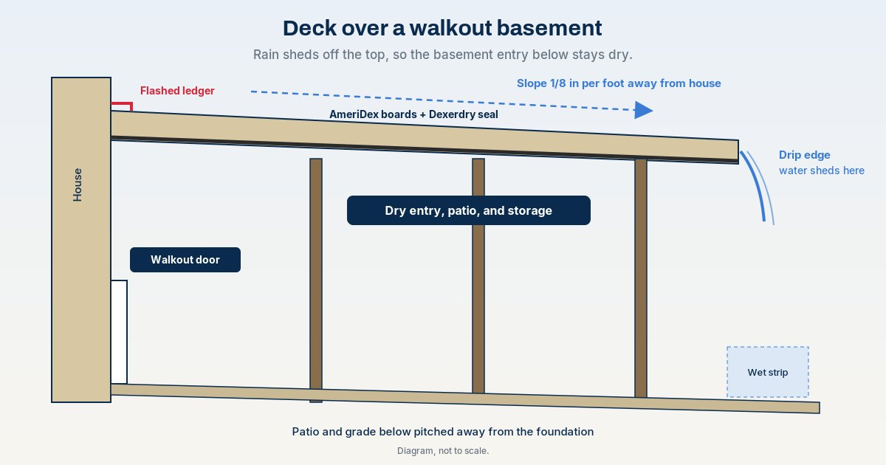

A walkout basement and a deck often come as a pair. The deck sits off the main floor, and the basement door opens underneath it. The trouble starts the first time it rains: water drips through the deck onto the door, the threshold, the patio, and anyone trying to get inside.
The entry under a deck stays dry when rain sheds off the top of the boards instead of falling through the gaps. AmeriDex boards lock onto the Dexerdry seal so water runs to the outer drip edge, and the walkout below becomes a dry space.
Why the walkout under a deck gets wet
Standard deck boards are installed with expansion gaps. Those gaps act like slot drains, so every rain sends water straight down onto the walkout door and the patio in front of it. Wet steps, puddles at the threshold, and splashing against the basement wall all start here.
The second source is the house connection. The ledger board that attaches the deck to the house usually sits just above the walkout. If it is not flashed, water can work its way behind it and into the wall. Our deck ledger flashing guide covers that detail.
What keeps the entry dry
- A sealed surface. AmeriDex boards lock onto the Dexerdry seal between every board, so rain stays on top and runs off the ends. It works like a roof over the walkout.
- Slope away from the house. Pitch the deck at least 1/8 inch per foot away from the house so water moves away from the door, not toward it.
- A flashed ledger. Water that reaches the house side of the deck has to be kept out of the wall.
- Overhang and drip edge. Boards overhang the framing by at least 1 3/8 inch, with a drip edge so water drops clear at the outer edge instead of wicking back under.
A deck over a walkout patio or entry is a great fit. AmeriDex is not meant to be a roof over a finished interior room, so never install it over interior living space.
Deck over walkout planning checklist
Confirm the pitch
Slope at least 1/8 inch per foot away from the house. Flat framing, or framing with peaks and valleys, leaves water sitting on the surface.
Flash the ledger
The ledger sits right above the walkout. Flash it before the decking goes on so water cannot get behind it and into the wall or the door frame.
Plan board direction
Boards running parallel to the house with the deck pitched away from it is ideal. If boards run away from the house, plan a gutter at the house.
Plan overhang and drip edge
At least 1 3/8 inch past the framing, with the drip edge about 3/8 inch outside the frame, so water drops clear at the outer edge.
Keep the door and seating out of the wet strip
Rain sheds past the drip edge, so the outer strip of ground gets wet. The area near the house, where the walkout door is, is the dry side.
Pitch the patio and grade away from the foundation
Water that sheds off the deck still lands on the ground. Make sure the patio and grade below carry it away from the basement wall, and follow your local code.
Pick a ceiling finish, if any
Optional: a vented vinyl or PVC soffit with at least 1 1/2 inches of continuous ventilated screen at the fascia. Wood ceilings are not recommended.
Keep it outdoor space
AmeriDex is for outdoor decks, porches, and balconies. Do not install it over interior living space.
Do
- Slope 1/8 inch per foot away from the house
- Flash the ledger above the walkout
- Overhang at least 1 3/8 inch with a drip edge
- Pitch the patio and grade away from the foundation
- Water test the finished deck
Don't
- Expect a gapped deck to keep the door dry
- Let the deck pitch back toward the house
- Put the door or seating in the wet strip at the outer edge
- Install over interior living space
- Use a wood ceiling under the deck
Most decks over a walkout are second-story decks. Read second-story deck waterproofing for how the whole layout fits together.
New build vs re-deck
On a new deck you can plan pitch, overhang, board direction, and ledger flashing from day one. Boards come in 12, 16, and 20 foot lengths. On an existing deck over a walkout, a re-deck works if the framing already meets the pitch and overhang requirements: the old boards come off and AmeriDex boards with the Dexerdry seal go on. See options for an existing deck for more.
What the dry space below can become
- A covered walkout entry you can use in the rain
- A patio under the deck for dining or lounging
- Dry storage for cushions, bikes, or outdoor gear
- A finished under-deck ceiling or a screened porch
- More ways to keep the space under a deck dry
AmeriDex boards and accessories carry a 25-year limited residential warranty and a 10-year limited commercial warranty under the AmeriDex Limited Warranty from A&M Building Products LLC.
Frequently asked questions
Can you put a deck over a walkout basement door?
Yes. Many homes have a deck above the walkout door. On a standard gapped deck, rain drips through the board gaps onto the door, the patio, and anyone below. With AmeriDex, the boards lock onto the Dexerdry seal so rain sheds off the top of the deck past the drip edge, and the entry below stays dry.
Why does water drip on my walkout door from the deck above?
Standard deck boards are installed with expansion gaps that act like slot drains. Rain falls through those gaps and lands on whatever is below, including the walkout door, the threshold, and the patio. Water can also get in at the house if the ledger is not flashed.
What slope does a deck over a walkout need?
Pitch the deck at least 1/8 inch per foot away from the house so water moves toward the outer edge and sheds off the drip edge instead of running back toward the house.
Can I finish the ceiling above my walkout patio?
Yes. Use a vented vinyl or PVC soffit that allows airflow, with at least 1 1/2 inches of continuous ventilated screen at the fascia, or a vented soffit throughout. Wood ceilings are not recommended.
Can AmeriDex go over a finished room instead of a walkout patio?
No. AmeriDex is for outdoor decks, porches, and balconies. Do not install it over interior living space. The space below should stay an outdoor area, such as a walkout patio, entry, or storage.
Can I fix an existing deck over my walkout?
Often, as a re-deck, if the existing framing already meets the pitch and overhang requirements. The old boards come off and AmeriDex boards with the Dexerdry seal go on.
Planning a deck over your walkout?
Start a free quote with your deck size and what sits below it. Request free samples to see the boards and the seal up close. Builders can use Dexerdry install help. Always follow your local code.